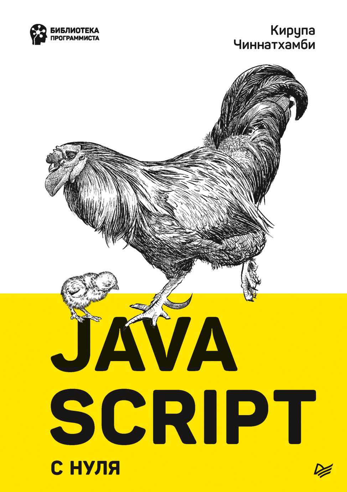

console.log("Hello, world!")document.querySelector("#app")element.addEventListener("click", fn)class Hero extends Character

Интерактивная книга · Полка JavaScript
JavaScript с нуля
Понятное и наглядное руководство от Кирупы Чиннатхамби. От переменных, условий и циклов до объектов, классов, манипуляций с DOM и обработки событий мыши и клавиатуры.